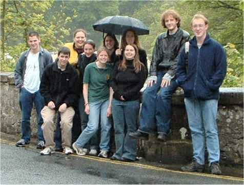
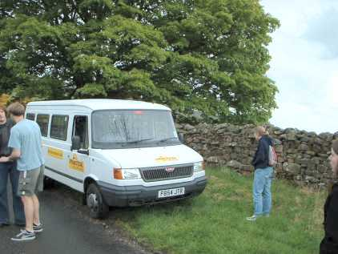

Richmond, St Mary, 8 bells, tenor
11-0-0 in F#
Richmond, St Mary, 8 bells, tenor
11-0-0 in F#
At Aysgarth Falls. Unsurprisingly (as it's Yorkshire), it was
raining.
(left to right: (back row) Rob Lee, Angela Squier, Emma Greenhill,
Charlotte Elkington, Ellie Dawkins, Tom Henthorn, David Bryant. (front row)
Mark Pim, Hilary Blake, Karen Owen. Taking photo: Mike Esbester. Minding the
minibus: Adam Greenley)
8-50 on a Saturday morning is not a time generally known to students, but on 17th May twelve of us were waiting at the appointed meeting place in York city centre at the appointed time (well - more or less!). The hired minibus was duly collected, and we all piled into it and headed for Richmond, the first tower, accompanied by confidence-inspiring creaks and groans from our vehicle, which was driven by Adam Greenley.
After some difficulty in finding the correct church in Richmond, we arrived there and rang on the only eight of the day, tenor 11 cwt. The anoraks of the party duly noted the old inscribed tenor headstock and some inscribed pieces of frame mounted on the ringing chamber walls. It was discovered that the 7th had a tendency to slip wheel when Rob Lee or I rang it, although it didn't seem to want to do it to anyone else. The suggestion was made that it could possibly be attributed to sloppy handling, which is obviously hard to believe!
Following a brief stop at Richmond market for sustenance, we headed for the pretty village of Grinton. No trouble finding the church here. The 10 cwt six are rung from a large upstairs ringing chamber, which was used for the filming of an episode of All Creatures Great and Small. Having rung, we went across the road to the pub for lunch and a pint (or two, or three..). Then back into the minibus and along the narrow winding lanes across the top of the dale towards the next scheduled tower, Askrigg. However, Askrigg was not to be as a mile or so from our destination the minibus ran out of diesel. Adam had realised that we were low but thought we had enough to get to the next petrol station as the warning light hadn't come on. It was knackered, evidently!

And so we found ourselves in the middle of nowhere, blocking the road at the bottom of a hill with a minibus which wouldn't go. While Adam steered, the other eleven of us pushed it backwards up the hill to get it onto a verge out of the way. Have you ever tried pushing a 17-seater minibus us a hill? I don't advise it! Having got it off the road, we asked a couple who had been walking their dog and had just got back to their car nearby how long it would take to walk to Askrigg. Twenty Minutes, apparently, but the nearest petrol station was in Hawes five miles away. However, we were unbelievably fortunate in that they had a can of diesel in the boot of their car, and kindly sold it to us.
Mobile again, we abandoned any idea of ringing at Askrigg and headed into Hawes to get more diesel. We then went on to the next tower, Aysgarth. The 12 cwt six were the heaviest bells of the day, hung on plain bearings. They went well though, and we had some of the best ringing of the day here. A quick look at the Aysgarth Falls (in the rain!) then on to the final tower, East Witton, where we came across the Bishopthorpe ringers who were also on an outing in the area. They'd got the classic Taylor eight at Middleham and we couldn't have them - how dare they! Anyway, we had a ring on the six at East Witton, tenor 7 cwt, where the 5th had a tendency to disappear at backstroke and some of the ropes were so long that ringing while kneeling or sitting on the floor proved easiest for some.
We then headed back to York (without running out of diesel this time!) and returned the minibus. Later, most of us met up again at the university and some people even got very drunk, hard though that will be to believe. One female ringer, who shall of course remain nameless, seemed intent on chatting up every bloke in Goodricke Bar, to the amusement of many onlookers.
Last but definitely not least, thanks to Mike for organising the day, to Adam for driving the minibus along narrow winding lanes and to the towers we visited for the use of their bells.
David Bryant
Richmond, St Mary, 8 bells, tenor
11-0-0 in F#
 Grinton, St Andrew, 6 bells, tenor
10-0-7 in G
Grinton, St Andrew, 6 bells, tenor
10-0-7 in G
 Aysgarth, St Andrew, 6 bells,
tenor 11-3-10 in F#
Aysgarth, St Andrew, 6 bells,
tenor 11-3-10 in F#
 East Witton, St John the
Evangelist, 6 bells, tenor 6-3-23 in C
East Witton, St John the
Evangelist, 6 bells, tenor 6-3-23 in C
 Tom in
pushing pose
Tom in
pushing pose
 Rope a bit long,
Rob?
Rope a bit long,
Rob?